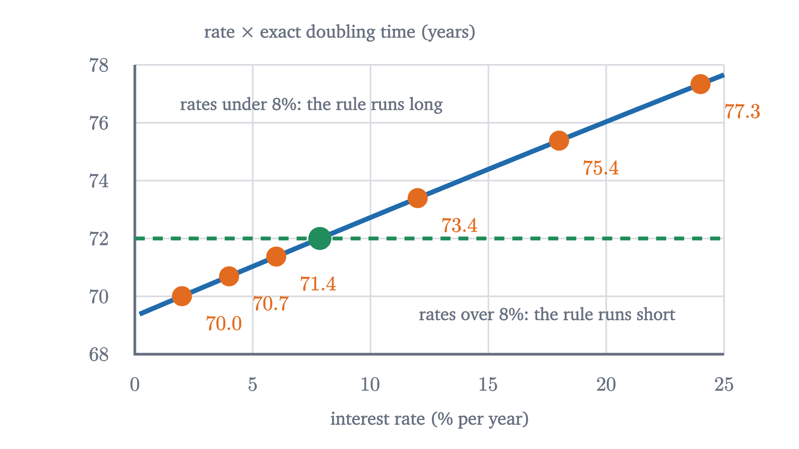
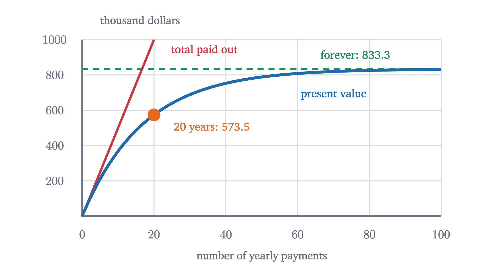
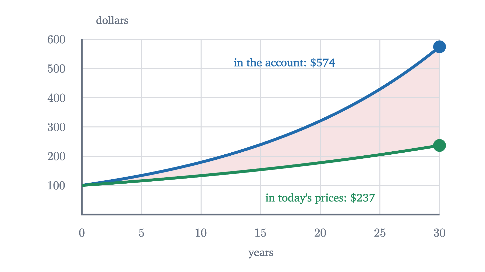

Compound interest and the time value of money
Why a dollar today is worth more than a dollar later, how to price future payments, and where the rule of 72 and the mortgage formula come from.
AssumesCompound interest and where e comes fromGeometric series, and why 0.999... equals 1What a logarithm is: turning multiplication into addition
A friend who owes you money offers a choice: $100 today, or $110 a year from now. Assume she is certain to pay either way. Which do you take?
Most people answer from temperament, and the patient ones take the $110. But there is a way to answer by arithmetic, and it turns on a fact that is not in the question: what you could do with $100 over the coming year. If a bank would turn it into $106, wait for the $110. If you are paying 20% on a credit card balance, take the $100 now, because paying off $100 of that debt saves you $120 next year. The same two payments rank differently for different people, and the interest rate decides.
So money has a date attached, and amounts at different dates cannot be compared until they are moved to the same date. Moving money forward in time is called compounding, moving it backward is called discounting, and with those two operations we will be able to price a lottery prize and a mortgage.
Growth by a factor
Fix one account for the whole lesson: it pays 6% interest per year, added at the end of each year. Put in $100. After one year the bank adds 6% of $100, which is $6, and the balance is $106. The step that matters is the second one. The bank now pays 6% of $106, which is $6.36, so the balance is $112.36. The extra 36 cents is interest on last year’s $6 of interest.
Each year the balance $B$ becomes $B + 0.06B = 1.06B$. Adding 6% is the same as multiplying by 1.06, whatever the balance is.
After two years the two differ by 36 cents. Before reading on, guess how they compare after thirty.
At simple interest the balance after 30 years is $100(1 + 0.06 \times 30) = 280$ dollars. At compound interest it is $100 \times 1.06^{30} = 574.35$ dollars. Simple interest adds a fixed amount each year and traces a straight line. Compound interest multiplies by a fixed factor each year, which is exponential growth, and its curve bends upward because each year’s increase is 6% of a larger number.
Compound interest never loses this comparison when the rate is not negative. Bernoulli’s inequality, proved in the lesson on geometric series, says $(1 + r)^t \ge 1 + rt$ for $r \ge 0$ and whole $t \ge 1$, with equality only when $t = 1$ or $r = 0$.
How long until money doubles: the rule of 72
Pause and try
At 6% per year compounded, about how many years does $100 take to reach $200? First say what simple interest would predict. Then use $1.06^{2} = 1.1236$ and repeated squaring to bracket the true answer.
Show answerHide answer
Simple interest needs $100 of interest at $6 a year, so $100/6 \approx 16.7$ years. For compound interest, $1.06^4 = 1.1236^2 \approx 1.2625$, $1.06^8 \approx 1.5938$ and $1.06^{12} = 1.06^8 \times 1.06^4 \approx 2.012$. Eleven years gives $2.012 / 1.06 \approx 1.898$. So the balance passes $200 during the twelfth year, well ahead of simple interest.
Twelve years at 6%, and $6 \times 12 = 72$. Bankers have a rule of thumb that says this always happens: divide 72 by the rate in percent to get the doubling time in years. At 8% it predicts 9 years, at 4% it predicts 18. Where does a rule like that come from, and how far can it be trusted?
The exact doubling time $T$ solves $(1 + r)^T = 2$. To get an exponent out of an equation we take logarithms. The natural logarithm $\ln x$ is the power to which $e \approx 2.718$ must be raised to give $x$, and it turns powers into products: $\ln(a^T) = T \ln a$ (see logarithms). So $T \ln(1 + r) = \ln 2$, and
At 6% this is $0.6931 / 0.05827 = 11.90$ years. The formula is exact and useless in your head. The rule of thumb comes from approximating the denominator. For small $r$, calculus gives $\ln(1 + r) \approx r - \frac{r^2}{2}$. These are the first two terms of the Taylor series of the logarithm, and the error is smaller than $\frac{r^3}{3}$ for $0 < r < 1$. We use the fact without proof, but you can test it: $\ln 1.06 = 0.05827$ and $0.06 - 0.0018 = 0.0582$. Then
where the last step uses $\frac{1}{1 - x} \approx 1 + x$ for small $x$. Write the rate as a percentage $R = 100r$ and multiply through:
So rate times doubling time is not a constant. It starts at 69.3 for tiny rates and creeps upward. At $R = 8$ it is $69.3 + 2.8 = 72.1$. The rule of 72 replaces this slowly moving number by its value near 8%, a typical rate for loans and investments, and 72 happens to divide evenly by 2, 3, 4, 6, 8, 9 and 12. The derivation used two approximations, so it explains the rule without proving how accurate it is. The table measures the error directly.
| Rate | Exact $T = \frac{\ln 2}{\ln(1+r)}$ | Rule: $72/R$ | Rule minus exact |
|---|---|---|---|
| 1% | 69.66 years | 72.00 | +2.34 |
| 2% | 35.00 | 36.00 | +1.00 |
| 4% | 17.67 | 18.00 | +0.33 |
| 6% | 11.90 | 12.00 | +0.10 |
| 8% | 9.01 | 9.00 | −0.01 |
| 12% | 6.12 | 6.00 | −0.12 |
| 18% | 4.19 | 4.00 | −0.19 |
| 24% | 3.22 | 3.00 | −0.22 |

Between 4% and 12% the rule is within a third of a year. Outside that range it drifts: at 1% it is more than two years too long, and at 100% it claims 0.72 years when one compounding at 100% takes exactly 1 year. For continuous compounding, where the balance is $Pe^{rt}$, the doubling time is exactly $\ln 2 / r$ and the right numerator is 69.3 (see exponential growth and $e$).
Running time backward: present value
Return to the friend’s offer of $100 today or $110 in a year, with our account at 6%. Compounding answers it one way: $100 today becomes $106, which is less than $110, so wait. We can ask the same question in today’s money. How much would you need to deposit today to have $110 in a year? An amount $x$ with $1.06x = 110$, so $x = 110/1.06 = 103.77$ dollars. The later payment is worth $103.77 today, which beats $100.
That number deserves a stronger claim than “what I would deposit”. Suppose the friend’s promise of $110 could be bought and sold. I claim $103.77 is the only price it can have, as long as people can deposit and borrow at 6%. Here is the argument on the numbers. If the promise sold for $100, you could borrow $100 from the bank, buy it, collect $110 next year, repay the bank $106, and keep $4 without ever using a cent of your own. Everyone would want to do this, and with buyers far outnumbering sellers the price would be bid up. If it sold for $108, you could do the reverse: sell such a promise for $108, deposit $103.77 of it to cover the $110 you now owe, and pocket $4.23 today. A riskless profit that needs no money of your own is called an arbitrage, and the argument says that every price except one creates an arbitrage.
Discounting is compounding run in reverse: to move money $t$ periods forward multiply by $(1+r)^t$, and to move it $t$ periods back divide by the same factor.
The theorem is a result about a model, and its hypotheses are strong. Real banks lend at a higher rate than they pay on deposits, so in practice a band of prices survives, with the deposit rate setting one edge and the borrowing rate the other. Selling a promise you do not hold is not open to everyone. Real promises can be broken, and a risky $110 is worth less than a certain one. What the model gets right is the direction and the size of the effect: later money is worth less, by a factor that compounds with the wait.
A stream of payments
A lottery advertises a prize of one million dollars, paid as $50,000 at the end of each year for 20 years. The winner may instead take a single payment today. How large must that payment be to match the prize?
Pause and try
With the account at 6%, guess whether the twenty payments are worth more or less than $500,000 today. Then compute the present value of the first payment and of the last, using $1.06^{20} \approx 3.2071$.
Show answerHide answer
The first payment is worth $50{,}000 / 1.06 = 47{,}170$ dollars today and the last $50{,}000 / 3.2071 = 15{,}590$. Every payment is worth between those, so the total lies between $20 \times 15{,}590 = 311{,}800$ and $20 \times 47{,}170 = 943{,}400$, which does not settle the guess. We need the sum.
Each payment has its own present value, and values at the same date can be added. With $d = 1/1.06$ the prize is worth
Each term is $d$ times the one before, so this is a finite geometric sum. The lesson on geometric series proved that $1 + x + \cdots + x^{n-1} = \frac{1 - x^n}{1 - x}$ for $x \ne 1$, by multiplying the sum by $x$ and subtracting. That is all we need.
For the lottery, $1.06^{-20} = 0.3118$, so $PV = 50{,}000 \times \frac{0.6882}{0.06} = 50{,}000 \times 11.4699 = 573{,}496$ dollars. The “million dollar” prize is worth about $573,000.
Pause and try
Now suppose the $50,000 a year were paid forever, to you and then to your heirs. Is that worth more or less than one million dollars today, at 6%? Find a quick way to check your answer without any series.
Show answerHide answer
The perpetuity formula gives $50{,}000 / 0.06 = 833{,}333$ dollars, less than a million even though the total paid out has no bound. The check: deposit $833,333 at 6%. Each year it earns $0.06 \times 833{,}333 = 50{,}000$ dollars of interest. Withdraw exactly that, and the balance is back to $833,333, ready to do the same next year, forever.

The picture explains why the twenty-year prize is already worth more than two thirds of the endless one: payments beyond year 20 are discounted so heavily that all of them together add only $260,000.
A loan is an annuity seen from the other side
When a bank lends you money and you repay in equal installments, the bank has bought an annuity from you. So the loan amount should equal the present value of your payments. Try that on a loan small enough to follow by hand: $1000 at 10% per year, repaid in three equal yearly payments $M$. Setting $1000 = M \cdot \frac{1 - 1.1^{-3}}{0.1} = 2.48685M$ gives $M = 402.11$ dollars. Does paying that amount really clear the debt?
| Year | Owed at start | Interest (10%) | Payment | Owed at end |
|---|---|---|---|---|
| 1 | 1000.00 | 100.00 | 402.11 | 697.89 |
| 2 | 697.89 | 69.79 | 402.11 | 365.57 |
| 3 | 365.57 | 36.56 | 402.11 | 0.02 |
It does, up to two cents of rounding in $M$. Each payment first covers that year’s interest, and the remainder reduces the debt. The table shows it working once; the theorem shows it always works.
Now a real one. A $300,000 mortgage at 6% per year, repaid monthly for 30 years. Lenders quote the yearly rate and charge one twelfth of it each month, so $i = 0.005$ and $n = 360$. Then $1.005^{-360} = 0.16604$ and
The first month’s interest is $0.005 \times 300{,}000 = 1500$ dollars, so only $298.65 of the first payment reduces the debt.
Over 30 years the borrower pays $360 \times 1798.65 = 647{,}514$ dollars for a $300,000 loan. The extra $347,514 is the price of having the money decades early. By the annuity theorem, those 360 payments, discounted at half a percent per month, are worth exactly $300,000 on the day of the loan.
Real and nominal rates
One more correction keeps these numbers honest. The account’s 6% is a rate in dollars, and dollars themselves lose buying power when prices rise. Suppose prices rise 3% per year, so a basket of goods costing $100 today costs $103 next year. Your $100 becomes $106, which buys $106/103 = 1.0291$ baskets. In goods you are 2.91% richer, and 2.91% is what the account really pays.
This relation is exact, and it is known as the Fisher equation. Solving, $\rho = \frac{r - \pi}{1 + \pi}$, which for small $\pi$ is close to the familiar approximation $\rho \approx r - \pi$: here $3\%$ against the exact $2.91\%$. The approximation worsens as inflation rises. At $r = 60\%$ and $\pi = 50\%$ it says 10% when the truth is $1.6/1.5 - 1 = 6.7\%$.

The rule for present values is consistency: discount dollar amounts at the nominal rate, and amounts stated in today’s prices at the real rate. Mixing the two is an error.
Worked examples
Stepping back: the hard step was accepting that $100 today and $100 next year are different things. Once each amount carries its date, everything else follows from one operation, multiplying or dividing by $(1+r)^t$, and one piece of algebra, the geometric sum. What the model takes for granted is the rate itself: one known, fixed rate at which everyone can borrow and lend. Real rates move, differ between borrowers, and carry risk, and much of finance is the study of what to do about that. The discount factor $d$ returns in the lesson on game theory, where it measures how much a player cares about tomorrow’s payoff.
Check yourself
At 5% per year, what is the present value of $1000 received at the end of each of the next two years?
Problems
Work these with a calculator before opening the solutions. The first three repeat the lesson’s moves, the next three combine them, and the last two go beyond it.
Problem 1
$2500 is deposited at 4% per year for 10 years. Find the balance under simple interest and under compound interest. How much of the compound balance is interest on interest?
Show solutionHide solution
Simple: $2500(1 + 0.04 \times 10) = 3500$ dollars. Compound: $2500 \times 1.04^{10} = 2500 \times 1.48024 = 3700.61$ dollars. The principal is $2500 and the interest on the principal is $1000 in both cases, so the interest on interest is $3700.61 - 3500 = 200.61$ dollars.
Problem 2
An investment grows at 9% per year. (a) Estimate its doubling time with the rule of 72 and compare with the exact value. (b) About how long until it is eight times its starting size?
Show solutionHide solution
(a) The rule gives $72/9 = 8$ years. Exactly, $T = \ln 2 / \ln 1.09 = 0.69315 / 0.08618 = 8.04$ years, so the rule is 0.04 years short. (b) Eight is $2^3$, three doublings: about 24 years by the rule, and $3 \times 8.04 = 24.13$ years exactly. Check: $1.09^{24} = 7.91$.
Problem 3
You are owed $5000 three years from now. (a) What is it worth today at 6% per year? (b) The debtor offers $4000 today instead. At what interest rate would you be indifferent between the two?
Show solutionHide solution
(a) $5000 / 1.06^3 = 5000 / 1.191016 = 4198.10$ dollars, so at 6% the later payment is better than $4000 now. (b) Indifference means $4000(1+r)^3 = 5000$, so $(1+r)^3 = 1.25$ and $1 + r = 1.25^{1/3} = 1.0772$. At a rate of 7.72% the two are equal. If you can earn more than that, take the $4000.
Problem 4
A college scholarship pays $20,000 at the end of each year. (a) At 4% per year, what must a donor give today to fund it for 25 years? (b) To fund it forever? (c) By what factor does the answer to (b) change if the rate is 2%?
Show solutionHide solution
(a) $20{,}000 \times \frac{1 - 1.04^{-25}}{0.04}$. With $1.04^{-25} = 0.37512$ the factor is $\frac{0.62488}{0.04} = 15.6221$, and the gift is $312,442. (b) $20{,}000 / 0.04 = 500{,}000$ dollars. (c) At 2% it is $20{,}000/0.02 = 1{,}000{,}000$ dollars: halving the rate doubles the cost, because the perpetuity’s value $C/r$ is inversely proportional to the rate. This is why endowments are sensitive to interest rates.
Problem 5
A couple can afford $1500 per month and is offered a 30-year mortgage at 6% per year, charged monthly. (a) What is the largest loan they can take? (b) If they choose a 15-year loan of that same size, what is the monthly payment, and how much less interest do they pay in total?
Show solutionHide solution
(a) The loan is the present value of the payments: $L = 1500 \times \frac{1 - 1.005^{-360}}{0.005} = 1500 \times \frac{0.83396}{0.005} = 1500 \times 166.7916 = 250{,}187$ dollars. (b) With $n = 180$, $1.005^{-180} = 0.40748$, so $M = \frac{250{,}187 \times 0.005}{0.59252} = 2111.22$ dollars. Total interest over 30 years is $360 \times 1500 - 250{,}187 = 289{,}813$ dollars. Over 15 years it is $180 \times 2111.22 - 250{,}187 = 129{,}833$ dollars. The shorter loan costs $611 more each month and saves about $160,000 of interest.
Problem 6
A savings account pays 1% per year while prices rise 3% per year. (a) Find the real interest rate exactly and by the approximation $r - \pi$. (b) What happens to the buying power of $10,000 left there for 10 years?
Show solutionHide solution
(a) $1 + \rho = 1.01/1.03 = 0.98058$, so $\rho = -1.94\%$. The approximation gives $-2\%$. A real rate can be negative even though the nominal rate is positive. (b) Buying power is multiplied by $0.98058^{10} = 0.8219$. The account shows $10{,}000 \times 1.01^{10} = 11{,}046$ dollars, but that buys what $8219 buys today.
Problem 7
(Growing perpetuity.) A payment stream starts with $C$ one period from now and then grows by a fraction $g$ each period: $C,\ C(1+g),\ C(1+g)^2, \ldots$ forever. Show that if $-1 < g < r$ its present value is $\dfrac{C}{r - g}$. What goes wrong if $g \ge r$? Evaluate for $C = 50{,}000$, $r = 6\%$, $g = 2\%$.
Show solutionHide solution
The payment at time $k$ is $C(1+g)^{k-1}$ and its present value is $\frac{C(1+g)^{k-1}}{(1+r)^k}$. These form a geometric series with first term $a = \frac{C}{1+r}$ and ratio $x = \frac{1+g}{1+r}$. If $-1 < g < r$ then $0 < x < 1$, the series converges, and its sum is
If $g \ge r$ then $x \ge 1$, the terms do not approach 0, and the series diverges: the payments grow at least as fast as discounting shrinks them, and no finite price matches the stream. For the numbers given, $PV = 50{,}000 / 0.04 = 1{,}250{,}000$ dollars, against $833,333 with no growth.
Problem 8
For the loan in the loan payment theorem, show that the debt after $k$ payments is
Use it to find what is still owed on the lesson’s $300,000 mortgage after 10 years, and explain why the answer is far more than two thirds of the loan.
Show solutionHide solution
From the proof, $d^k B_k = L - M(d + \cdots + d^k)$ for every $k$ (add the telescoping equations up to $k$ instead of $n$). Multiply by $(1+i)^k$: $B_k = L(1+i)^k - M\left[(1+i)^{k-1} + \cdots + (1+i) + 1\right]$. The bracket is a finite geometric sum with ratio $1+i$ and $k$ terms, equal to $\frac{(1+i)^k - 1}{(1+i) - 1} = \frac{(1+i)^k - 1}{i}$. For the mortgage, $k = 120$ and $1.005^{120} = 1.81940$, so
A third of the payments have been made, yet only $48,943 of the debt, about a sixth, is gone. Early on the debt is large, so most of each payment is interest and little is left over to reduce it. The repayment speeds up as the debt, and with it the interest, shrinks.